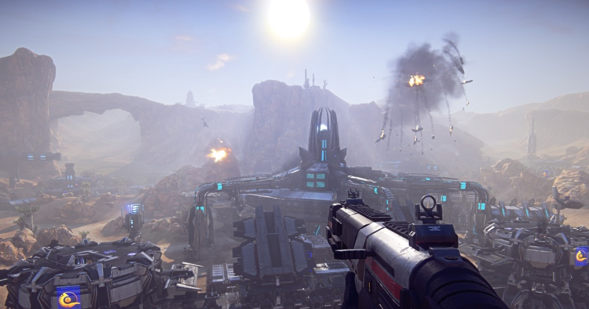
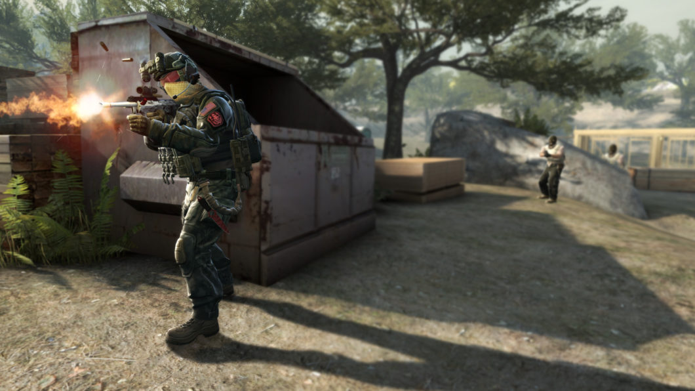
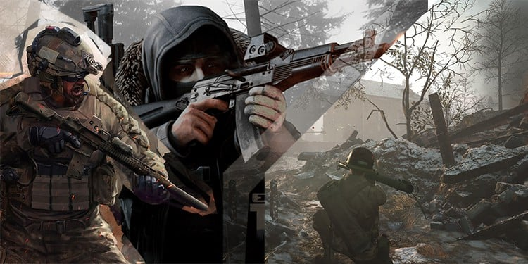
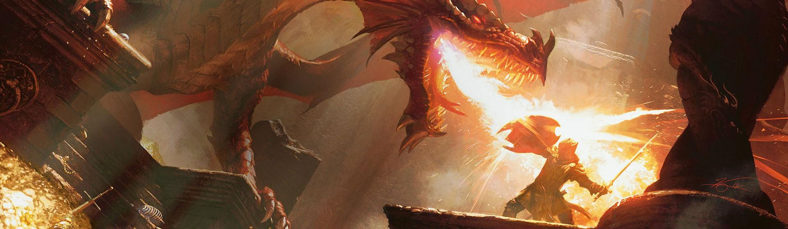
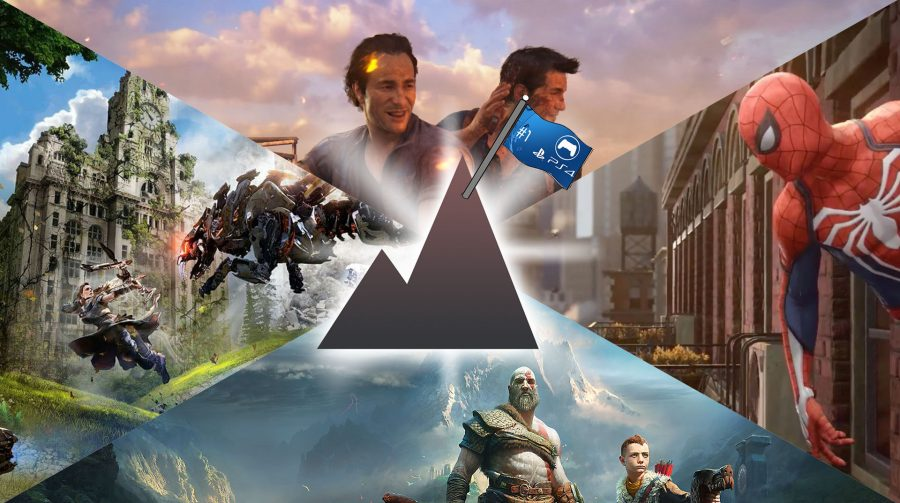

-FPS
Os jogos FPS fazem parte de um dos gêneros mais populares da indústria dos games, movimentando milhões de dólares todos os anos. A origem vem dos primeiros jogos em primeira pessoa ainda nos anos 1980, mas foram os títulos lançados na década seguinte que definiram suas convenções, seguidas até hoje.
Os jogos FPS (ou First-Person Shooters, em inglês) são exatamente o que o nome descreve: jogos em que a visão do personagem é em primeira pessoa e a mesma do jogador, para maior imersão. Títulos do gênero são geralmente focados em tiro, ação com armas de fogo ou brancas para combate corpo a corpo, com algumas variações.
Por via de regra, o jogador não é capaz de ver o personagem que controla por completo, exceto em algumas cenas, ou usando elementos de cenário que sirvam como espelhos. As únicas partes visíveis são as mãos em geral, portando as armas e/ou equipamentos que você tem à disposição.
As principais características de um jogo FPS são a visão ampla do personagem. Dessa forma, o jogador é colocado em uma posição no mapa que permite a visualização de todo o ambiente à sua volta.
Além disso, o foco é no combate, preferencialmente com armas de fogo mas também pode incluir armas corpo a corpo, e grande quantidade de inimigos a serem combatidos. Caso o jogo seja um multiplayer, os jogadores se organizam em times que se enfrentam, até que um lado saia como vencedor.
-RPG
RPG é a sigla em inglês para role-playing game, um gênero de jogo no qual os jogadores assumem o papel de personagens imaginários, em um mundo fictício. Os jogos de RPG podem ser jogados de diversas formas. As mais comuns são através de atuação literal, na qual os jogadores agem, falam e se vestem como seus personagens, e o RPG de mesa, a forma mais famosa (e a primeira inventada) de RPG. Em qualquer modalidade de RPG, as histórias são guiadas por um jogador denominado “mestre”, que dita a trama, descreve os cenários, controla os inimigos que outros jogadores enfrentam, etc. Enquanto isso, os outros jogadores tomam suas decisões de forma livre conforme as situações narradas pelo mestre. As principais características do RPG são a interatividade e o trabalho em grupo. É muito raro que jogadores se reúnam para jogar RPG de forma competitiva, uma vez que se trata de um jogo predominantemente colaborativo, no qual os jogadores só conseguirão vencer se trabalharem em conjunto.
Jogos de ação tipicamente possuem características de conflitos com força física violenta e ágil, onde o jogador deve ter um tempo de reação curto como maior característica definitiva. O jogador normalmente está sob pressão e possui tempo limitado para realizar suas ações e não há muito tempo para realizar planos ou estratégias elaboradas. Em um jogo de ação comum, o jogador controla um personagem que normalmente é o protagonista da história do jogo. Ele deve navegar sobre o ambiente e sobrepujar seus desafios, combatendo outros personagens, coletando itens e solucionando quebra-cabeças simples. O jogador está limitado pelo tempo e por recursos que representam a quantidade de vida do personagem, que quando acabada, o jogador recebe um game over. Ao final de cada nível ou fase, tipicamente há um embate com um grande antagonista.
Um jogo eletrônico de ação é um tipo de jogo eletrônico que desafia a velocidade, reflexo e raciocínio rápido do jogador. Jogos de ação geralmente incluem conflitos estratégicos, desafios de exploração e necessidade de solucionar quebra-cabeças simples, mas estes não são elementos que definem tal gênero. O gênero de jogo de ação é o mais amplo e inclusivo gênero no mundo dos videogames, contendo diversos sub-gêneros como jogos de luta, jogos de tiro em primeira pessoa, beat'em ups, jogos de plataforma e survival horror.